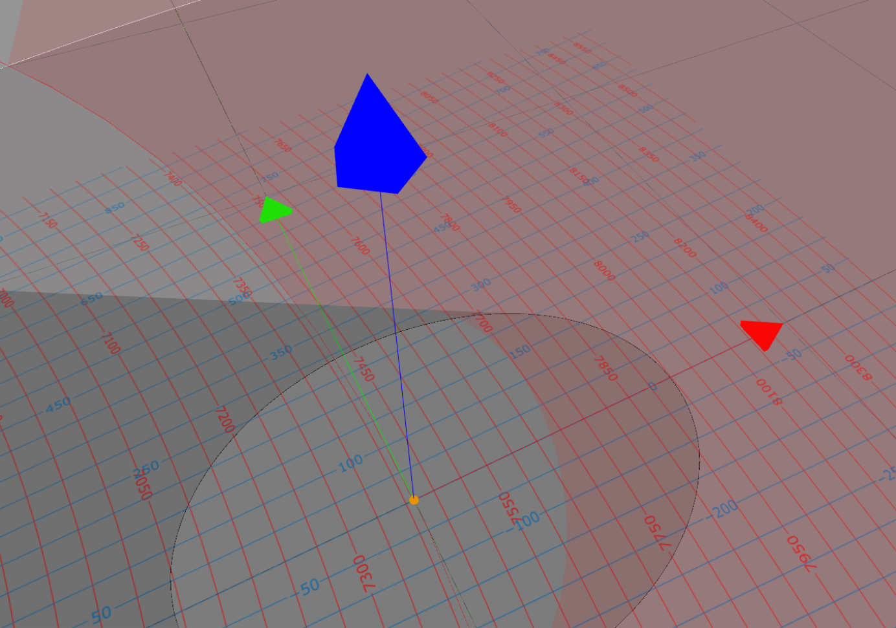

The Bistatic Synthetic Aperture Radar (BSAR) configurator
BSARConf aims to provide a simple but comprehensive tool to visualize bistatic SAR system
geometric configurations together with the calculation of some useful resulting parameters. The main ojective of this tool is to provide
a configurator for the design of some future potential bistatic SAR missions. In addition to its operational objective, the BSAR configurator
tool offers a didactic approach to the SAR systems geometry in a general way with its 3D representation and the possibility to visualize the
impact of the variation of one parameter to the potential result of the final SAR image.
1.1 The BSARconf interface
The main page of the BSAR configurator allows to first, visualize in a 3D scene the transmitter and receiver
geometry defined by their carrier and antenna objects, respectively. The transmitter and receiver antenna beams
are respectively colored white and black in order to distinguish them.
The transmitter parameters can be modified by clicking the Tx button on the upper left corner and the
receiver parameters can be modified by clicking the Rx button on the upper right corner.
1.2 The BSARconf parameters
1.2.1 Input parameters
1.2.2 Information parameters
1.2.3 Information plots
2. PHYSICAL BACKGROUND
2.1 Geometry
2.1.1 Referential
Figure 1 - Illustration of the local ENU referential plane of point
$P$ with longitude
$\lambda$, latitude
$\phi$ and altitude
$H$ relative to the Earth ellipsoid surface.
In order to remain as general as possible, the referential plane of the bistatic SAR configurator
is taken as the local tangent East North
Up (ENU) plane relative to the point of interest $P$. Figure 1 above illustrates the local
ENU referential plane (green) relative to point of interest
$P$ at a given longitude $\lambda$, latitude $\phi$ and
altitude $H$ above the Earth referential ellipsoid. Axes $\hat{e}$,
$\hat{n}$ and $\hat{u}$ of the
local ENU referential form an orthonormal reference frame whose $\hat{e}$-axis
is tangent to the local parallel and positive toward increasing longitude,
$\hat{n}$-axis is tangent to the local meridian and positive toward
increasing latitude and $\hat{u}$-axis follows the outgoing local
normal to the Earth ellipsoid. More information about local tangent plane coordinates can be found
on the Wikipedia page:
Local tangent plane coordinates.
This referential frame centered on point of interest $P$ forms the main referential of the bistatic
SAR configurator geometry. Each geometric parameter is thus expressed relative to this referential frame
following the same color code and is illustrated on Figure 2 below. Realistic geometric configurations can
thus be used by converting them into the local ENU plane relative to the point of interest.
Each axis of the BSAR configurator referential frame have a length of 500 m and a grid helper is superimposed
in light grey spaced of 500 m in both east and
north directions. The extent of the depicted referential plane is
of 30 km in each direction.

Figure 2 - Illustration of the main referential frame of the
Bistatic SAR configurator geometry. Each axis is 500 m long, the light grey grid helper
has a spacing of 500 m in both directions and the extent of the referential plane is 30 km
in both directions.
2.1.2 Carrier
2.1.3 Antenna
2.1.4 Bistatic system
2.2 BSAR resolutions and design
2.2.1 Transmitted signal
The signal classically used in SAR imaging is a Linear Frequency Modulated (LFM) signal, also known
as a linear chirp. This signal offers the advantage, after application of a matched filter, to improve the range
resolution of the received signal (despite the intrinsic low range resolution of the radar) while maximising
the Signal-to-Noise Ratio (SNR) of the system (the received useful signal can be extracted from high relative
noise). For each transmitted pulse, the transmitted signal takes the form:
$$
s_T(u,t)=\sqrt{P_T(u,t)}\Pi\left(\dfrac{t}{T_p}\right)
\exp\left[\mathrm{j}2\pi\left(f_0t+\dfrac{K}{2}t^2\right)\right]
$$
where variable $u$ denotes the slow-time (relative to the Pulse Repetition Inverval, PRI) and variable $t$ denotes
the fast-time (relative to the electromagnetic wave propagation time) of the transmitted wave. Function $\Pi(t)$ is
the rectangular window function and other parameters are given by:
$P_T(u,t)$ the transmitted power of the signal at each pulse [W], which may vary as function of fast-time
(i.e. amplitude modulation) but is generally constant during transmission for SAR systems. This transmitted
power can thus be simplified to: $P_T(u,t)\simeq P_T(u)$ in general
$T_p$ the pulse duration [s]
$f_0$ the center (carrier) frequency of the transmitted signal [Hz]
$\lambda_0=c/f_0$ the center wavelength of the transmitted signal [m]
$K$ the transmitted frenquency slope (positive or negative) [Hz/s]
where parameter $c$ is the electromagnetic wave propagation celerity (generally taken as the
speed of light in vacuum).
The LFM signal frequency is thus expressed by:
$$
f(t)=\dfrac{1}{2\pi}\dfrac{d\phi(t)}{dt}=f_0+Kt
$$
with $\phi(t)$ being the LFM signal phase. This frequency varies linearly as function of fast-time, hence the terminology
of linear frequency modulation of the transmitted signal. One important parameter of this kind of signal
is the transmitted bandwidth $B$, that is, the frequency range swept by the linear frequency modulation. This
bandwidth is given by:
$$
B=\left\vert K\right\vert T_p\quad\quad\mbox{[Hz]}
$$
2.2.2 Generalized Ambiguity Function
Figure 3 - Illustration of the Bistatic SAR geometry in the local ENU frame.
The Bistatic SAR system response can be characterized by its BSAR bisector vector$\overrightarrow{\beta}(u_0)$
together with its corresponding first time derivative $\dot{\overrightarrow{\beta}}(u_0)$ known as the
BSAR angular velocity vector in the Stop-and-Go (SG) approximation for a point scatterer at a given slow-time $u_0$. Both vectors are illustrated
on Figure 3 above in the local ENU frame where transmitter geometry is depicted in white and receiver geometry in
black. Those vectors are expressed by, respectively:
$$\left\{
\begin{array}{rcl}
\overrightarrow{\beta}(u_0) & = & \widehat{u_{TP}}(u_0)+\widehat{u_{RP}}(u_0) \\
\dot{\overrightarrow{\beta}}(u_0) & = &
-\left[\dfrac{\overrightarrow{V_T}(u_0)-\left(\widehat{u_{TP}}(u_0)\cdot\overrightarrow{V_T}(u_0)\right)\widehat{u_{TP}}(u_0)}{R_{TP}(u_0)}+
\dfrac{\overrightarrow{V_R}(u_0)-\left(\widehat{u_{RP}}(u_0)\cdot\overrightarrow{V_R}(u_0)\right)\widehat{u_{RP}}(u_0)}{R_{RP}(u_0)}\right]
\end{array}\right.
$$
with the bistatic angle of the BSAR system derived from the BSAR bisector vector:
$$
\beta(u_0)=2\mathrm{arccos}\left(\left\Vert\overrightarrow{\beta}(u_0)\right\Vert/2\right)
$$
The complex Generalized Ambiguity Function (GAF), also known as the Point Spread Function (PSF), can thus be derived by supposing a narrowband
transmitted signal, a linear flight path around slow-time $u_0$, isotropic antennas and by neglecting the signal attenuation to distances.
Calculations of this derivation are not presented here but are mainly inspired from []. The complex bistatic GAF is finally given by:
$$
\chi_P(\vec{r})\simeq\mathrm{sinc}\left(\dfrac{B}{c}\overrightarrow{\beta}(u_0)\cdot\vec{r}\right)
\mathrm{sinc}\left(\dfrac{T_u}{\lambda_0}\dot{\overrightarrow{\beta}}(u_0)\cdot\vec{r}\right)
\exp\left(\mathrm{j}\frac{2\pi}{\lambda_0}\overrightarrow{\beta}(u_0)\cdot\vec{r}\right)
$$
where $\mathrm{sinc}(z)$ is the normalized sinus cardinal function.
It must be pointed out that the previous expressions of the BSAR bisector and angular velocity vectors are given in
the slant radar geometry. The ground bistatic GAF is given by:
$$
\chi_{P,g}(\vec{r})\simeq\mathrm{sinc}\left(\dfrac{B}{c}\overrightarrow{\beta_g}(u_0)\cdot\vec{r}\right)
\mathrm{sinc}\left(\dfrac{T_u}{\lambda_0}\dot{\overrightarrow{\beta_g}}(u_0)\cdot\vec{r}\right)
\exp\left(\mathrm{j}\frac{2\pi}{\lambda_0}\overrightarrow{\beta_g}(u_0)\cdot\vec{r}\right)
$$
for which vectors are expressed in the ground geometry, that is, if $\hat{n}$ is the unit local normal of the surface at point $P$
on the ground:
$$
\left\{
\begin{array}{rcl}
\overrightarrow{\beta_g}(u_0) & = & \overrightarrow{\beta}(u_0)-\left(\overrightarrow{\beta}(u_0)\cdot\hat{n}\right)\hat{n} \\
\dot{\overrightarrow{\beta_g}}(u_0) & = & \dot{\overrightarrow{\beta}}(u_0)-\left(\dot{\overrightarrow{\beta}}(u_0)\cdot\hat{n}\right)\hat{n}
\end{array}
\right.
$$
where $\overrightarrow{\beta_g}(u_0)$, respectively $\dot{\overrightarrow{\beta_g}}(u_0)$, is the
rejection of vectors
$\overrightarrow{\beta}(u_0)$, respectively $\dot{\overrightarrow{\beta}}(u_0)$,
with respect to the unit normal $\hat{n}$. Those vectors belongs to the plane of normal $\hat{n}$.
2.2.3 Range resolution
The BSAR system range resolution can be estimated from its GAF function
The half-power slant range resolution:
$$
\delta_r(u_0)\simeq\dfrac{0.88589c}{B\left\Vert\overrightarrow{\beta}(u_0)\right\Vert}
$$
The half-power ground range resolution:
$$
\delta_{r,g}(u_0)\simeq\dfrac{0.88589c}{B\left\Vert\overrightarrow{\beta_g}(u_0)\right\Vert}
$$
2.2.4 Lateral resolution
The half-power slant lateral resolution:
$$
\delta_r(u_0)\simeq\dfrac{0.88589\lambda_0}{T_u\left\Vert\dot{\overrightarrow{\beta}}(u_0)\right\Vert}
$$
The half-power ground lateral resolution:
$$
\delta_{r,g}(u_0)\simeq\dfrac{0.88589\lambda_0}{T_u\left\Vert\dot{\overrightarrow{\beta_g}}(u_0)\right\Vert}
$$
2.2.5 Iso-Range
Figure 4 - Illustration of the bistatic SAR slant iso-range surface (red ellipsoid)
and ground iso-range contour (red ellipse) in the local ENU frame. Point $E$
is the center of the ellipsoid formed by the transmitter $T$ and receiver $R$ placed at the two foci of
the ellipsoid passing through ground point $P$.
2.2.6 Iso-Doppler
$$
f_D(\vec{r};u_0)\simeq\dfrac{1}{\lambda_0}\left(V_T(u_0)\sin\left[\gamma_T(u_0)\right]+
V_R(u_0)\sin\left[\gamma_R(u_0)\right]\right)\quad\quad\mbox{[Hz]}
$$
$$
K_D(\vec{r};u_0)\simeq-\dfrac{1}{\lambda_0}\left(
\dfrac{V_T^2(u_0)\cos^2\left[\gamma_T(u_0)\right]}{R_T(u_0)}+
\dfrac{V_R^2(u_0)\cos^2\left[\gamma_R(u_0)\right]}{R_R(u_0)}\right)\quad\quad\mbox{[Hz/s]}
$$
with $\gamma_T(u)$ and $\gamma_R(u)$ the antenna squint angles for the transmitter and receiver, respectively,
defined as the angle between the antenna line of sight and the carrier velocity vector:
$$
\sin\left[\gamma_T(u)\right]=\dfrac{\overrightarrow{V_T}(u)\cdot\overrightarrow{TP}(u)}
{\left\Vert\overrightarrow{V_T}\right\Vert\left\Vert\overrightarrow{TP}(u)\right\Vert}
\quad;\quad
\sin\left[\gamma_R(u)\right]=\dfrac{\overrightarrow{V_R}(u)\cdot\overrightarrow{RP}(u)}
{\left\Vert\overrightarrow{V_R}(u)\right\Vert\left\Vert\overrightarrow{RP}(u)\right\Vert}
$$
In order to estimate the sensitivity of the BSAR system after full processing of the SAR raw data (range and azimuth processing), the
Noise Equivalent Sigma Zero (NESZ) parameter is used and corresponds to the bistatic scattering coefficient of the observed target for which
the system SNR is equal to one. It is given by:
$$
NESZ=\dfrac{(4\pi)^3R_T^2R_R^2kTLN}{\lambda_0^2\overline{P_T}G_TG_RT_uA_{res}}
$$
where $R_T$ and $R_R$ are the transmitter-target and receiver-target ranges, respectively, $k$ is the
Boltzmann constant [J/K],
$T$ is the receiver temperature [K], $L$ is the transmitter loss factor and $N$ is the receiver noise factor which forms the
noise power spectral density or noise power per unit bandwidth: $kTLN$ [W/Hz] of the system. Terms $G_T$ and $G_R$ represents
the transmitter and receiver one-way antenna power gains, respectively, $A_{res}$ is the
resolution area of the system and the mean
transmitted power $\overline{P_T}$ depends on the pulse duration $T_p$ and pulse repetition interval $PRI$:
$$
\overline{P_T}=\dfrac{T_p}{PRI}P_T
$$
where $P_T$ is the transmitted peak power.
2.2.9 Range Ambiguities
2.2.10 Doppler Ambiguities
3. APPENDIX - MATHEMATICAL FUNCTIONS
3.1 Rectangular window function
The rectangular window function is defined by:
$$
\Pi(z)=\left\{\begin{array}{ll}
1 & \mbox{if}~\vert z\vert\leq1/2 \\
0 & \mbox{otherwise}
\end{array}\right.
$$
3.1 Normalized sinus cardinal function
The normalized sinus cardinal function is defined by:
$$
\mathrm{sinc}(z)=\dfrac{\mathrm{sinc}(\pi z)}{\pi z}
$$
which is defined in $z=0$ by its limit:
$$
\lim_{z\rightarrow 0}\mathrm{sinc}(z)=1
$$